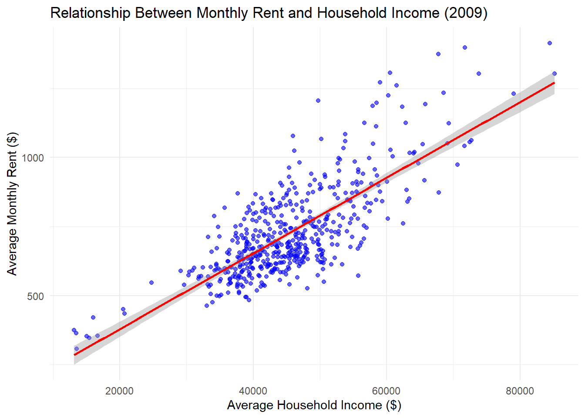
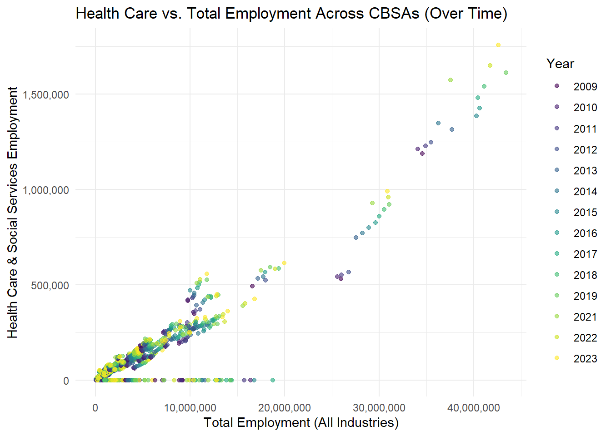
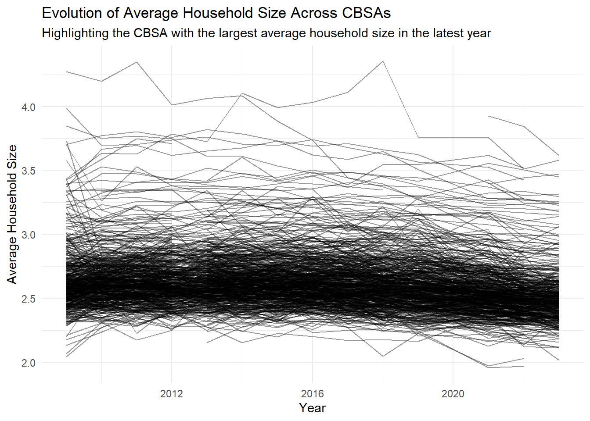
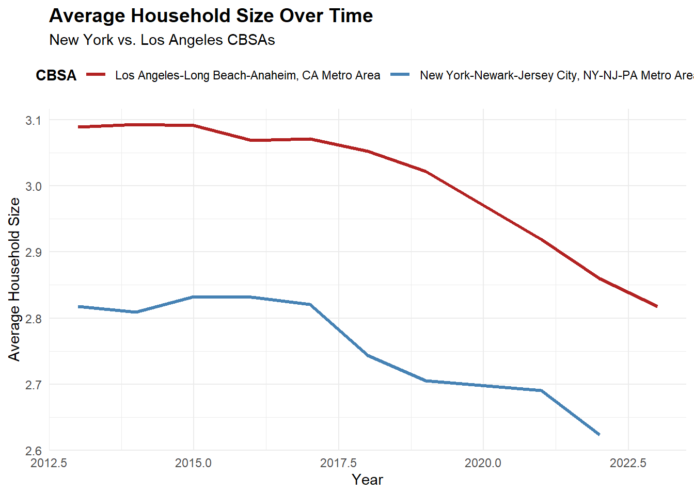

Mini-Project #02: Making Backyards Affordable for All
Author
Haley Vargas
Published
December 18, 2025
🏗 Introduction: Understanding YIMBY and NIMBY Dynamics in U.S. Housing
Across the United States, housing affordability has become a growing concern especially in certain metropolitan areas. While some metropolitan areas have embraced new development to meet demand, others have struggled with restrictive zoning, rising rents, and limited housing growth. These contrasting approaches are often described using the terms YIMBY and NIMBY.
YIMBY (“Yes In My Backyard”): refers to policies and attitudes that support new housing development — especially in urban or high-demand areas.
NIMBY (“Not In My Backyard”): describes opposition to new housing projects, typically due to concerns about neighborhood change, congestion, or property values.
This project will further investigate the relationship between rent burden and housing growth across U.S. metropolitan areas (Core-Based Statistical Areas, or CBSAs) to identify where YIMBY-inspired policies have been most successful.
Data Acquisition
Task 1: Data Import
Show the code
if(!dir.exists(file.path("data", "mp02"))){dir.create(file.path("data", "mp02"), showWarnings=FALSE, recursive=TRUE)}library <-function(pkg){## Mask base::library() to automatically install packages if needed## Masking is important here so downlit picks up packages and links## to documentation pkg <-as.character(substitute(pkg))options(repos =c(CRAN ="https://cloud.r-project.org"))if(!require(pkg, character.only=TRUE, quietly=TRUE)) install.packages(pkg)stopifnot(require(pkg, character.only=TRUE, quietly=TRUE))}library(tidyverse)library(glue)library(readxl)library(tidycensus)get_acs_all_years <-function(variable, geography="cbsa",start_year=2009, end_year=2023){ fname <-glue("{variable}_{geography}_{start_year}_{end_year}.csv") fname <-file.path("data", "mp02", fname)if(!file.exists(fname)){ YEARS <-seq(start_year, end_year) YEARS <- YEARS[YEARS !=2020] # Drop 2020 - No survey (covid) ALL_DATA <-map(YEARS, function(yy){ tidycensus::get_acs(geography, variable, year=yy, survey="acs1") |>mutate(year=yy) |>select(-moe, -variable) |>rename(!!variable := estimate) }) |>bind_rows()write_csv(ALL_DATA, fname) }read_csv(fname, show_col_types=FALSE)}# Household income (12 month)INCOME <-get_acs_all_years("B19013_001") |>rename(household_income = B19013_001)# Monthly rentRENT <-get_acs_all_years("B25064_001") |>rename(monthly_rent = B25064_001)# Total populationPOPULATION <-get_acs_all_years("B01003_001") |>rename(population = B01003_001)# Total number of householdsHOUSEHOLDS <-get_acs_all_years("B11001_001") |>rename(households = B11001_001)get_building_permits <-function(start_year =2009, end_year =2023){ fname <-glue("housing_units_{start_year}_{end_year}.csv") fname <-file.path("data", "mp02", fname)if(!file.exists(fname)){ HISTORICAL_YEARS <-seq(start_year, 2018) HISTORICAL_DATA <-map(HISTORICAL_YEARS, function(yy){ historical_url <-glue("https://www.census.gov/construction/bps/txt/tb3u{yy}.txt") LINES <-readLines(historical_url)[-c(1:11)] CBSA_LINES <-str_detect(LINES, "^[[:digit:]]") CBSA <-as.integer(str_sub(LINES[CBSA_LINES], 5, 10)) PERMIT_LINES <-str_detect(str_sub(LINES, 48, 53), "[[:digit:]]") PERMITS <-as.integer(str_sub(LINES[PERMIT_LINES], 48, 53))data_frame(CBSA = CBSA,new_housing_units_permitted = PERMITS, year = yy) }) |>bind_rows() CURRENT_YEARS <-seq(2019, end_year) CURRENT_DATA <-map(CURRENT_YEARS, function(yy){ current_url <-glue("https://www.census.gov/construction/bps/xls/msaannual_{yy}99.xls") temp <-tempfile()download.file(current_url, destfile = temp, mode="wb") fallback <-function(.f1, .f2){function(...){tryCatch(.f1(...), error=function(e) .f2(...)) } } reader <-fallback(read_xlsx, read_xls)reader(temp, skip=5) |>na.omit() |>select(CBSA, Total) |>mutate(year = yy) |>rename(new_housing_units_permitted = Total) }) |>bind_rows() ALL_DATA <-rbind(HISTORICAL_DATA, CURRENT_DATA)write_csv(ALL_DATA, fname) }read_csv(fname, show_col_types=FALSE)}PERMITS <-get_building_permits()library(httr2)library(rvest)get_bls_industry_codes <-function(){ fname <-file.path("data", "mp02", "bls_industry_codes.csv")library(dplyr)library(tidyr)library(readr)if(!file.exists(fname)){ resp <-request("https://www.bls.gov") |>req_url_path("cew", "classifications", "industry", "industry-titles.htm") |>req_headers(`User-Agent`="Mozilla/5.0 (Macintosh; Intel Mac OS X 10.15; rv:143.0) Gecko/20100101 Firefox/143.0") |>req_error(is_error = \(resp) FALSE) |>req_perform()resp_check_status(resp) naics_table <-resp_body_html(resp) |>html_element("#naics_titles") |>html_table() |>mutate(title =str_trim(str_remove(str_remove(`Industry Title`, Code), "NAICS"))) |>select(-`Industry Title`) |>mutate(depth =if_else(nchar(Code) <=5, nchar(Code) -1, NA)) |>filter(!is.na(depth))# These were looked up manually on bls.gov after finding # they were presented as ranges. Since there are only three# it was easier to manually handle than to special-case everything else naics_missing <- tibble::tribble(~Code, ~title, ~depth, "31", "Manufacturing", 1,"32", "Manufacturing", 1,"33", "Manufacturing", 1,"44", "Retail", 1, "45", "Retail", 1,"48", "Transportation and Warehousing", 1, "49", "Transportation and Warehousing", 1 ) naics_table <-bind_rows(naics_table, naics_missing) naics_table <- naics_table |>filter(depth ==4) |>rename(level4_title=title) |>mutate(level1_code =str_sub(Code, end=2), level2_code =str_sub(Code, end=3), level3_code =str_sub(Code, end=4)) |>left_join(naics_table, join_by(level1_code == Code)) |>rename(level1_title=title) |>left_join(naics_table, join_by(level2_code == Code)) |>rename(level2_title=title) |>left_join(naics_table, join_by(level3_code == Code)) |>rename(level3_title=title) |>select(-starts_with("depth")) |>rename(level4_code = Code) |>select(level1_title, level2_title, level3_title, level4_title, level1_code, level2_code, level3_code, level4_code) |>drop_na() |>mutate(across(contains("code"), as.integer))write_csv(naics_table, fname) }read_csv(fname, show_col_types=FALSE)}INDUSTRY_CODES <-get_bls_industry_codes()library(httr2)library(rvest)get_bls_qcew_annual_averages <-function(start_year=2009, end_year=2023){ fname <-glue("bls_qcew_{start_year}_{end_year}.csv.gz") fname <-file.path("data", "mp02", fname) YEARS <-seq(start_year, end_year) YEARS <- YEARS[YEARS !=2020] # Drop Covid year to match ACSif(!file.exists(fname)){ ALL_DATA <-map(YEARS, .progress=TRUE, possibly(function(yy){ fname_inner <-file.path("data", "mp02", glue("{yy}_qcew_annual_singlefile.zip"))if(!file.exists(fname_inner)){request("https://www.bls.gov") |>req_url_path("cew", "data", "files", yy, "csv",glue("{yy}_annual_singlefile.zip")) |>req_headers(`User-Agent`="Mozilla/5.0 (Macintosh; Intel Mac OS X 10.15; rv:143.0) Gecko/20100101 Firefox/143.0") |>req_retry(max_tries=5) |>req_perform(fname_inner) }if(file.info(fname_inner)$size <755e5){warning(sQuote(fname_inner), "appears corrupted. Please delete and retry this step.") }read_csv(fname_inner, show_col_types=FALSE) |>mutate(YEAR = yy) |>select(area_fips, industry_code, annual_avg_emplvl, total_annual_wages, YEAR) |>filter(nchar(industry_code) <=5, str_starts(area_fips, "C")) |>filter(str_detect(industry_code, "-", negate=TRUE)) |>mutate(FIPS = area_fips, INDUSTRY =as.integer(industry_code), EMPLOYMENT =as.integer(annual_avg_emplvl), TOTAL_WAGES = total_annual_wages) |>select(-area_fips, -industry_code, -annual_avg_emplvl, -total_annual_wages) |># 10 is a special value: "all industries" , so omitfilter(INDUSTRY !=10) |>mutate(AVG_WAGE = TOTAL_WAGES / EMPLOYMENT) })) |>bind_rows()write_csv(ALL_DATA, fname) } ALL_DATA <-read_csv(fname, show_col_types=FALSE) ALL_DATA_YEARS <-unique(ALL_DATA$YEAR) YEARS_DIFF <-setdiff(YEARS, ALL_DATA_YEARS)if(length(YEARS_DIFF) >0){stop("Download failed for the following years: ", YEARS_DIFF, ". Please delete intermediate files and try again.") } ALL_DATA}WAGES <-get_bls_qcew_annual_averages()
Data Integration and Initial Exploration
Task 2: Multi-Table Questions
Question 1: Which CBSA (by name) permitted the largest number of new housing units in the decade from 2010 to 2019 (inclusive)?
Show the code
PERMITS |>filter(year >=2010& year <=2019) |>group_by(CBSA) |>summarise(total_units =sum(new_housing_units_permitted, na.rm =TRUE)) |>arrange(desc(total_units)) |>slice(1) |>left_join(HOUSEHOLDS |>select(GEOID, NAME), by =c("CBSA"="GEOID"))
# A tibble: 14 × 3
CBSA total_units NAME
<dbl> <dbl> <chr>
1 26420 482075 Houston-Sugar Land-Baytown, TX Metro Area
2 26420 482075 Houston-Sugar Land-Baytown, TX Metro Area
3 26420 482075 Houston-Sugar Land-Baytown, TX Metro Area
4 26420 482075 Houston-Sugar Land-Baytown, TX Metro Area
5 26420 482075 Houston-The Woodlands-Sugar Land, TX Metro Area
6 26420 482075 Houston-The Woodlands-Sugar Land, TX Metro Area
7 26420 482075 Houston-The Woodlands-Sugar Land, TX Metro Area
8 26420 482075 Houston-The Woodlands-Sugar Land, TX Metro Area
9 26420 482075 Houston-The Woodlands-Sugar Land, TX Metro Area
10 26420 482075 Houston-The Woodlands-Sugar Land, TX Metro Area
11 26420 482075 Houston-The Woodlands-Sugar Land, TX Metro Area
12 26420 482075 Houston-The Woodlands-Sugar Land, TX Metro Area
13 26420 482075 Houston-The Woodlands-Sugar Land, TX Metro Area
14 26420 482075 Houston-Pasadena-The Woodlands, TX Metro Area
Answer: The CBSA that had the largest number of new housing units in 2010 to 2019 is Houston-Sugar Land-Baytown-The Woodlands, TX Metro area.
Question 2: In what year did Albuquerque, NM (CBSA Number 10740) permit the most new housing units?
# A tibble: 1 × 2
year total_units
<dbl> <dbl>
1 2013 2606
Answer: Albuquerque, NM (CBSA 10740) permitted the most new housing units in 2013, with a total of 2606 units.
Question 3: Which state (not CBSA) had the highest average individual income in 2015?
Show the code
# Join income and household dataincome_data <- INCOME |>left_join(HOUSEHOLDS |>select(GEOID, households), by ="GEOID")# Create the state lookup tablestate_df <-data.frame(abb =c(state.abb, "DC", "PR"),name =c(state.name, "District of Columbia", "Puerto Rico"))# Main analysishighest_income_state <- income_data |>filter(year ==2015) |>mutate(state =str_extract(NAME, ", (.{2})", group =1)) |>mutate(total_income = household_income * households) |># ensure this matches your column namegroup_by(state) |>summarise(state_total_income =sum(total_income, na.rm =TRUE),state_total_population =sum(households, na.rm =TRUE) ) |>mutate(avg_individual_income = state_total_income / state_total_population) |>left_join(state_df, by =c("state"="abb")) |>arrange(desc(avg_individual_income)) |>slice(1)highest_income_state
# A tibble: 1 × 5
state state_total_income state_total_population avg_individual_income name
<chr> <dbl> <dbl> <dbl> <chr>
1 DC 2868195377574 30743621 93294 Distric…
Answer: The state with the highest average individual income in 2015 was Washington D.C.
Question 4: Data scientists and business analysts are recorded under NAICS code 5182. What is the last year in which the NYC CBSA had the most data scientists in the country? In recent, the San Francisco CBSA has had the most data scientists.
Show the code
library(dplyr)library(stringr)# Create standardized CBSA codescensus_std <- HOUSEHOLDS %>%transmute(std_cbsa =paste0("C", GEOID), NAME) %>%distinct(std_cbsa, NAME)wages_std <- WAGES %>%mutate(std_cbsa =paste0(FIPS, "0"))# Filter for data scientists and join with census datadata_scientists_joined <- wages_std %>%filter(INDUSTRY ==5182) %>%inner_join(census_std, by ="std_cbsa", relationship ="many-to-many")# Identify top CBSA (metro area) by employment per yeartop_cbsa_per_year <- data_scientists_joined %>%group_by(YEAR, NAME) %>%summarise(total_employment =sum(EMPLOYMENT, na.rm =TRUE), .groups ="drop") %>%group_by(YEAR) %>%slice_max(order_by = total_employment, n =1, with_ties =FALSE) %>%ungroup() %>%arrange(YEAR)# Check if New York was ever top and find the last year it waslast_year_ny_top <- top_cbsa_per_year %>%filter(str_detect(NAME, "New York")) %>%summarise(last_year_top =max(YEAR, na.rm =TRUE)) last_year_ny_top
# A tibble: 1 × 1
last_year_top
<dbl>
1 2015
Answer: 2015
Question 5: What fraction of total wages in the NYC CBSA was earned by people employed in the finance and insurance industries (NAICS code 52)? In what year did this fraction peak?
Show the code
nyc_finance_fraction <- WAGES |>filter(FIPS =="C3562") |>group_by(YEAR, INDUSTRY) |>summarise(total_wages =sum(TOTAL_WAGES, na.rm =TRUE), .groups ="drop") |>group_by(YEAR) |>mutate(year_total =sum(total_wages, na.rm =TRUE)) |>mutate(finance_fraction =if_else(INDUSTRY ==52, total_wages / year_total, NA_real_)) |>filter(INDUSTRY ==52) |>drop_na(finance_fraction)# Step 2: Find the year with the highest fractionpeak_year <- nyc_finance_fraction |>slice_max(finance_fraction, n =1) |>select(YEAR, finance_fraction)peak_year
Answer: The fraction of total wages in the NYC CBSA earned by people in the finance and insurance industries (NAICS 52) peaked in 2014, with a fraction of 0.046.
Task 3: Initial Visualizations
The relationship between monthly rent and average household income per CBSA in 2009:
Show the code
rent_income_2009 <- RENT |>filter(year ==2009) |>inner_join( INCOME |>filter(year ==2009) |>select(GEOID, household_income),by ="GEOID" )ggplot(rent_income_2009, aes(x = household_income, y = monthly_rent)) +geom_point(alpha =0.6, color ="blue") +geom_smooth(method ="lm", se =TRUE, color ="red") +labs(title ="Relationship Between Monthly Rent and Household Income (2009)",x ="Average Household Income ($)",y ="Average Monthly Rent ($)" ) +theme_minimal()

The relationship between total employment and total employment in the health care and social services sector (NAICS 62) across different CBSAs:
Show the code
library(scales)employment_totals <- WAGES |>group_by(FIPS, YEAR) |>summarize(total_employment =sum(EMPLOYMENT, na.rm =TRUE))employment_health <- WAGES |>filter(INDUSTRY ==62) |>group_by(FIPS, YEAR) |>summarize(health_employment =sum(EMPLOYMENT, na.rm =TRUE))employment_joined <-inner_join(employment_totals, employment_health, by =c("FIPS", "YEAR"))ggplot(employment_joined, aes(x = total_employment, y = health_employment, color =as.factor(YEAR))) +geom_point(alpha =0.6) +scale_color_viridis_d(name ="Year") +scale_x_continuous(labels = comma) +scale_y_continuous(labels = comma) +labs(title ="Health Care vs. Total Employment Across CBSAs (Over Time)",x ="Total Employment (All Industries)",y ="Health Care & Social Services Employment" ) +theme_minimal()

The evolution of average household size over time:
Show the code
install.packages("gghighlight")
package 'gghighlight' successfully unpacked and MD5 sums checked
The downloaded binary packages are in
C:\Users\haley\AppData\Local\Temp\RtmpiUhBlG\downloaded_packages
Show the code
library(gghighlight)library(ggplot2)library(dplyr)household_size <- HOUSEHOLDS |>select(GEOID, NAME, households, year) |>left_join( POPULATION |>select(GEOID, population, year),by =c("GEOID", "year") ) |>mutate(avg_household_size = population / households)ggplot(household_size, aes(x = year, y = avg_household_size, color = NAME)) +geom_line(alpha =0.8) +gghighlight( year ==max(year) & avg_household_size ==max(avg_household_size, na.rm =TRUE),label_key = NAME,unhighlighted_params =list(color ="gray0", alpha =0.4) ) +labs(title ="Evolution of Average Household Size Across CBSAs",subtitle ="Highlighting the CBSA with the largest average household size in the latest year",x ="Year",y ="Average Household Size",color ="CBSA" ) +theme_minimal()

Show the code
household_size <- HOUSEHOLDS |>select(GEOID, NAME, households, year) |>left_join( POPULATION |>select(GEOID, population, year),by =c("GEOID", "year") ) |>mutate(avg_household_size = population / households) |># Keep only NYC and LA CBSAsfilter(NAME %in%c("New York-Newark-Jersey City, NY-NJ-PA Metro Area","Los Angeles-Long Beach-Anaheim, CA Metro Area" ))ggplot(household_size, aes(x = year, y = avg_household_size, color = NAME)) +geom_line(linewidth =1.2) +labs(title ="Average Household Size Over Time",subtitle ="New York vs. Los Angeles CBSAs",x ="Year",y ="Average Household Size",color ="CBSA" ) +scale_color_manual(values =c("New York-Newark-Jersey City, NY-NJ-PA Metro Area"="steelblue","Los Angeles-Long Beach-Anaheim, CA Metro Area"="firebrick" ) ) +theme_minimal() +theme(legend.position ="top",legend.title =element_text(face ="bold"),plot.title =element_text(face ="bold", size =14) )

Building Indices of Housing Affordability and Housing Stock Growth
rent_extremes <- income_rent |>group_by(NAME) |>summarise(avg_burden =mean(rent_burden_index, na.rm =TRUE)) |>arrange(desc(avg_burden))DT::datatable(bind_rows(head(rent_extremes, 5),tail(rent_extremes, 5) ),caption ="CBSAs with Highest and Lowest Rent Burden")
Show the code
rent_extremes <- income_rent |>group_by(NAME) |>summarise(avg_burden =mean(rent_burden_index, na.rm =TRUE)) |>arrange(desc(avg_burden))DT::datatable(bind_rows(head(rent_extremes, 5),tail(rent_extremes, 5) ),caption ="CBSAs with Highest and Lowest Rent Burden")
Show the code
library(ggplot2)ggplot(income_rent, aes(x = year, y = rent_burden_index, group = NAME)) +geom_line(alpha =0.5) +labs(title ="Rent Burden Index Over Time",y ="Rent Burden Index (100 = Baseline Year Avg)",x ="Year" ) +theme_minimal()
Policy Brief: Advancing YIMBY Housing Growth through Federal Support
To ensure every community has access to affordable, abundant housing, this brief proposes federal incentives for municipalities that demonstrate YIMBY-oriented progress — measured by rent burden and housing growth metrics.
Identifying Key Sponsors
Primary Sponsor (YIMBY Success City): Houston, TX
Houston has demonstrated consistent population and housing growth, accompanied by a decline in rent burden over time. Its flexible zoning regulations and pro-development policies make it a model for how deregulated markets can support affordability through supply expansion.
Co-Sponsor (NIMBY City): New York City, NY
New York City, by contrast, exhibits persistently high rent burdens and slower housing development relative to demand. Encouraging YIMBY reforms here would help alleviate rent pressures, reduce displacement, and improve housing access for working- and middle-class families.
Support from Key Interest Groups
To ensure bipartisan and broad-based support, we identify two occupational groups that stand to benefit directly from YIMBY-friendly policy reforms:
Construction and Skilled Trades Workers
A federal YIMBY initiative would expand housing projects nationwide, increasing job opportunities for construction, carpentry, electrical, and plumbing professionals.
Higher housing demand ensures long-term employment stability and wage growth within these sectors.
Teachers and Public Service Workers
Public-sector workers often struggle with housing costs in high-rent cities.
Lower rent burdens would free up income, improve retention in critical local jobs, and strengthen community stability.
Proposed Federal Action
We propose a Federal YIMBY Incentive Program, designed to reward municipalities that:
Reduce average rent burden over a five-year period;
Achieve sustained population growth; and
Demonstrate above-average housing construction activity relative to local demand.
Eligible cities would receive grants to support infrastructure, public transportation, and sustainable development in growing neighborhoods.
Metrics for Evaluation
Rent Burden Metric Rent burden is defined as the ratio of annual rent expenses to household income. Cities with declining rent burdens indicate improved affordability and effective housing supply growth.
Housing Growth Metric Housing growth measures the ratio of new housing permits to population, adjusted for population growth. Higher ratios signal active development responding to local demand.
Conclusion
A well-structured federal YIMBY program would strengthen affordable housing markets, support working-class families, and generate new jobs across multiple industries. With a primary sponsor from Houston and a co-sponsor from New York City, Congress can bridge geographic and political divides to advance a common goal: ensuring that every American has access to a home they can afford.